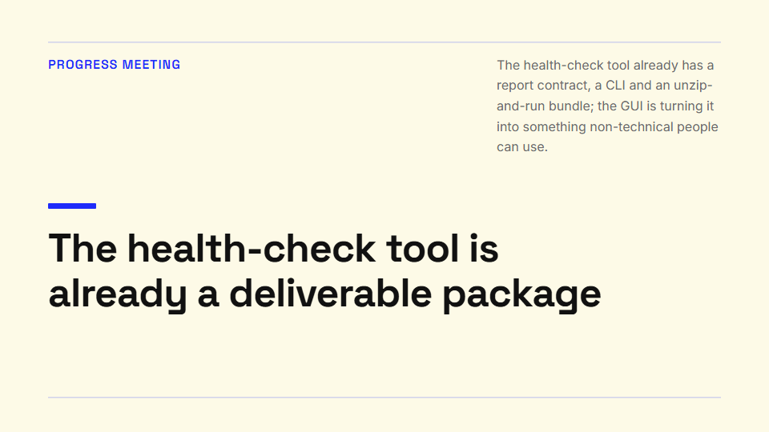
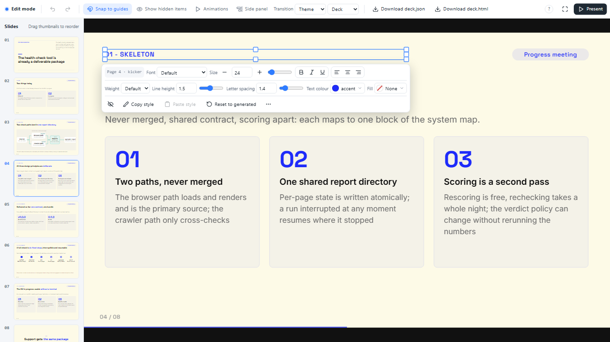

Narrative-first slide decks for Claude Code and Codex
The story is confirmed before a single slide exists.
slide-nextup is a deck workflow driven by your coding agent. The agent writes the narrative as a document and stops for your confirmation. Only then does it pick layouts, fill a theme and render one HTML file that you can edit, element by element, in the browser.
npx slide-nextup init my-decks
### s1 | The health-check tool is already a deliverable package - scene_role: hero - intensity: 4 - content_relation: statement - message: The health-check tool already has a report contract, a CLI and an unzip-and-run bundle; the GUI is turning it into something non-technical people can use. - evidence: Tidewatch website health-check tool (tidewatch), progress reports since 2026-08. - notes: Open with the conclusion in one sentence. …

A story has a rhythm before it has slides
Every slide in story.md carries a scene role and an intensity from 1 to 5. pnpm story:check validates the fields and the rhythm rules and prints a page-by-page table, with the intensities as a one-line bar, for you to read before anything is built.
The bundled example, examples/tidewatch-progress: a ten-minute progress meeting in eight slides, opening on the conclusion and settling into evidence.
Why
Three things the tools guarantee, so the prompt does not have to.
Story before slides
A brief becomes a narrative document with a core message, and a scene role and intensity per page. The build refuses to run until you have confirmed it, and refuses again if the story changes afterwards.
deck:scaffold checks story.confirmed.json
One file, no server
The deck is one HTML file with the model, the styles and the runtime embedded: keyboard navigation, step reveals, entrance animations, page transitions, a presenter window with notes and a timer, and interactive slots such as expandable details, image hotspots and tabs. The reveals follow the story: an evidence page builds up, a peak lands whole, charts grow from their data. Render with --inline-assets and the images travel inside it too.
deck.html · press F for fullscreen, P for the presenter window
Edit everything in the browser
Drag, resize, rotate, double-click to rewrite text, swap images, change fonts and colours, align and distribute a multi-selection, undo and redo. Edits are saved to the deck model, not lost in the DOM.
overrides in deck.json · autosave with pnpm dev
How it works
A fixed sequence with one human gate in the middle. Each deck lives in its own folder under decks/.
Four questions in one go: purpose and audience, length and page count, how ready the content is, density.
brief.mdThe narrative: core message, skeleton, then a role, an intensity and a message for every slide. Checked by the tool.
story.mdYou read the page-by-page summary and confirm, or send it back. Nothing is generated before this.
story.confirmed.jsonThree directions rendered as real covers from your own story. You pick one.
design.jsonA layout per slide, the theme filled in, one HTML file rendered and measured. Then the browser.
deck.json · deck.htmlThe agent follows five process skills, plain Markdown files that ship with the workspace. They live once in .agents/skills/; the copy Claude Code reads is generated and checked for drift, and Codex reads the originals through AGENTS.md.
| Skill | What it does | Output |
|---|---|---|
| slide-brief | Asks the four questions at once, skipping whatever your message already answered. | brief.md |
| slide-story | Writes the narrative, runs story:check, shows the summary and stops for your confirmation, then records it with story:confirm. | story.md, story.confirmed.json |
| slide-design | Renders one cover per visual direction from the real first slide and lets you choose. | design.json |
| slide-build | Gate, layouts, scaffold, fill the slots, validate, render, QA, hand over. "Redo page 3" rebuilds only that page and keeps your manual edits. | deck.json, deck.html |
| slide-talk | After the build, when you present it: cues for every slide (must or may, not a script), the questions to expect ranked by how likely and how costly, a checklist before going on. A cue can be pinned to a press, and the presenter window lights it then. Checked against the deck. | talk.md |
Editing in the browser
Press E on any rendered deck. With pnpm dev running, edits are written back to deck.json 1.5 seconds after you stop.

- Select and shape
- Click to drag, pull a handle to resize, double-click to edit text. Shift+click or drag on empty space selects several; the toolbar then aligns and distributes them.
- Undo, hide, reuse
- Ctrl+Z and Ctrl+Y undo and redo, Delete hides an element, Ctrl+Alt+C / V copy and paste a style.
- Arrange the deck
- The slide rail reorders pages by drag or Ctrl+Shift+↑↓ and hides them with Ctrl+Shift+H; hidden pages are skipped in playback and can be written back into the story.
- Interactive content, in place
- Expandable content behind a card, clickable areas drawn on an image, charts from
label | valuelines, tables, icons by name and tabs from## labelheadings. - Animation, per element
- Appears on click and the entrance effect sit behind More; the top bar has the Animations toggle and the transition menus for the deck and for this page. The scaffold sets all of it from the story's rhythm first.
- Take the file with you
- Download deck.json saves the model, Download deck.html the whole deck with your edits as one file, the images inlined while
pnpm devruns. F fills the screen, E goes back to playback.
Quality checks
Headless Chromium measures every page. The report is a file the agent reads and acts on.
- OverflowText that outgrows its box, with the content and box sizes.
- OverlapText elements that collide.
- Minimum font sizesA floor per text role: body text, captions, chips and the rest each have one.
- DensityHow much text a page carries, counted in full-width units: a CJK glyph is one, a Latin letter or digit a half.
- Image fitA picture whose ratio is far from its frame, so a diagram is never cropped in silence.
- Theme geometryLayout owns position and size, theme owns appearance; the check keeps them apart.
- MotionThe deck is played to its last step: every element must end where static mode puts it, a page on its way out stays still, reduced motion leaves nothing moving, and every duration stays in its band.
- Whole theme packs
theme:qabuilds a deck from every layout's own sample and runs the same checks, so a pack is fit before it is shared.
$ pnpm qa decks/tidewatch-progress/deck.json Tidewatch website health-check tool: progress, deliverables and direction (tidewatch-progress) · 8 slides · 8315 ms ✖ s1 cover-editorial ✖ [overflow] title: text overflows the element box: content 1560×468, box 1560×400 ✓ s2 cards-2 ✓ s3 photo ✓ s4 cards ✓ s5 cards-2 ✓ s6 process ✓ s7 cards ✓ s8 closing failed: 1 errors, 0 warnings report: artifacts/qa/tidewatch-progress.json
A real run on a copy of the example deck, rethemed to Blue Professional with its cover switched to cover-editorial: a three-line title in a two-line box. The agent reads the finding, shrinks the title or shortens it, and runs the check again. The cover at the top of this page is that same slide after the fix.
Themes and layouts
A theme pack is a folder you can zip, share and import. A layout is three files.
Live pages, not pictures: every frame is the layout rendered with its sample content under one of the three packs, the same document the quality checks measure; click one to open it full size. The gallery has a page per pack with each of the layouts it ships. Blue Professional is ported from the MIT-licensed beautiful-html-templates; the sources are listed in the third-party notices.
Portable packs
A pack is theme.json, theme.css and, when it ships its own layouts, a layouts/ folder. theme:export zips it with a fitness report; theme:import runs the checks in a temporary directory first and writes nothing if they fail. Packs are found in the deck's folder, the workspace, your user directory, then the package, first match wins.
A layout when none fits
A timeline, a four-quadrant grid: ask for it during the build and the agent writes layout.json, layout.html and layout.css from the reference that ships with the skills. theme:lint rejects colour and font rules in a layout, the gallery measures each text box against its slot hint, and theme:qa runs the full check before the layout is registered.
Get started
One workspace holds all your decks and pins its own version of the package.
npx slide-nextup init my-decks --example # package.json, AGENTS.md, CLAUDE.md, .gitignore, the skills, decks/, themes/, and the example deck cd my-decks pnpm install pnpm browsers:install # the Chromium used for QA and previews pnpm preflight # checks node, pnpm, playwright and chromium pnpm dev decks/tidewatch-progress/deck.json # http://127.0.0.1:4321, press E to edit
Then open the folder in Claude Code or Codex and ask for a deck. The agent reads the workspace's AGENTS.md and follows the skills. If you would rather hand the whole setup to the agent, paste this:
Set up slide-nextup and make me a deck. 1. Node 24 and pnpm are already installed; do not run nvm or change Node versions. 2. Run `npx slide-nextup init my-decks --example`, then `pnpm install` and `pnpm browsers:install` inside my-decks, and confirm `pnpm preflight` passes. 3. Read my-decks/AGENTS.md. Start with the slide-brief skill: ask me the four questions in one message and wait for my answers. 4. Do not generate any slide before I have confirmed the story.
Every deck command is a script that init wrote into the workspace's package.json. The full list, from story:check to theme:import, is in the Commands section of the README. To upgrade later: pnpm add -D slide-nextup@latest, then pnpm exec slide-nextup init --update, which refreshes the skills and scripts and never touches your decks or your AGENTS.md.
Questions
The honest edges of the first release.
Does presenting need a server?
No. deck.html carries the model, the styles and the player; rendered with --inline-assets, or saved with the editor's Download deck.html while the dev server runs, it carries the images too (saved without the dev server, it keeps your edits and refers to the pictures by their relative paths). Open it in a browser and use the arrow keys. F fills the screen, P opens the presenter window with the next slide, notes and a timer. The dev server is only for editing with autosave.
Can I export PDF or PowerPoint?
Not yet. The first release outputs HTML only. PDF export from the same HTML through Playwright is the planned next step; PowerPoint is outside the first phase.
Which agents work?
Claude Code and Codex are the two the workspace is set up for: Claude Code reads CLAUDE.md, which imports AGENTS.md; Codex reads AGENTS.md directly. The skills are plain Markdown, so any agent that can read a file and run pnpm scripts can follow them.
What happens if I change the story after confirming it?
story:confirm records a hash of the story. If the file changes, deck:scaffold refuses to run until you confirm again. Regenerating a page keeps the manual edits you made to it in the browser.
Can I bring my own theme?
Yes. A theme pack is a folder; drop it into the workspace's themes/ or import a zip with theme:import, which runs the lint and QA first. A pack ported from someone else's template records its source in theme.json and gets an entry in the third-party notices.
Does it work in Chinese, Japanese or Korean?
Yes. Character limits and the density check count full-width units, so a CJK glyph is one and a Latin letter is a half. The deck's lang follows the story's frontmatter or is guessed from the script of the text, and the original Chinese section headings of story.md are still accepted.
Is it open source?
MIT. The source is on GitHub and the package is slide-nextup on npm. Ported themes and icons keep their original licences, listed in the repository.